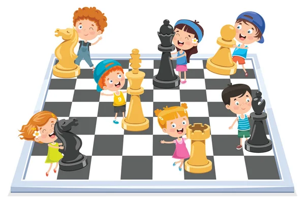

display: flex;

Young chess enthusiasts are getting ready for an exciting game! With concentration and
enthusiasm,
they’re eager to start their first match.Chess is a great way to develop critical thinking,
memory, and concentration in young children. Chess notation systems are used to record either
the moves made or the position of the pieces in a game of chess. Chess notation is used in chess
literature, and by players keeping a record of an ongoing game. The earliest systems of notation
used lengthy narratives to describe each move; these gradually evolved into more compact
notation systems. Algebraic notation is now the accepted international standard, with several
variants. Descriptive chess notation was used in English- and Spanish-language literature until
the late 20th century, but is now obsolescent. Portable Game Notation (PGN) is a text file
format based on English algebraic notation which can be processed by most chess software. Other
notation systems include ICCF numeric notation, used for international correspondence chess, and
systems for transmission using Morse code over telegraph or radio. The standard system for
recording chess positions is Forsyth–Edwards Notation (FEN).
display: inline;

A friendly team of young players is teaching each other strategies and chess moves. Working
together, they’re learning the game while having fun!Chess is a great way to develop critical
thinking, memory, and concentration in young children. Chess notation systems are used to record
either the moves made or the position of the pieces in a game of chess. Chess notation is used
in chess literature, and by players keeping a record of an ongoing game. The earliest systems of
notation used lengthy narratives to describe each move; these gradually evolved into more
compact notation systems. Algebraic notation is now the accepted international standard, with
several variants. Descriptive chess notation was used in English- and Spanish-language
literature until the late 20th century, but is now obsolescent. Portable Game Notation (PGN) is
a text file format based on English algebraic notation which can be processed by most chess
software. Other notation systems include ICCF numeric notation, used for international
correspondence chess, and systems for transmission using Morse code over telegraph or radio. The
standard system for recording chess positions is Forsyth–Edwards Notation (FEN).
display: block;

A giant chessboard — where the pieces are as big as the players! A unique way for kids to
experience
chess, making every move feel like a big decision.Chess is a great way to develop critical
thinking, memory, and concentration in young children. Chess notation systems are used to record
either the moves made or the position of the pieces in a game of chess. Chess notation is used
in chess literature, and by players keeping a record of an ongoing game. The earliest systems of
notation used lengthy narratives to describe each move; these gradually evolved into more
compact notation systems. Algebraic notation is now the accepted international standard, with
several variants. Descriptive chess notation was used in English- and Spanish-language
literature until the late 20th century, but is now obsolescent. Portable Game Notation (PGN) is
a text file format based on English algebraic notation which can be processed by most chess
software. Other notation systems include ICCF numeric notation, used for international
correspondence chess, and systems for transmission using Morse code over telegraph or radio. The
standard system for recording chess positions is Forsyth–Edwards Notation (FEN).